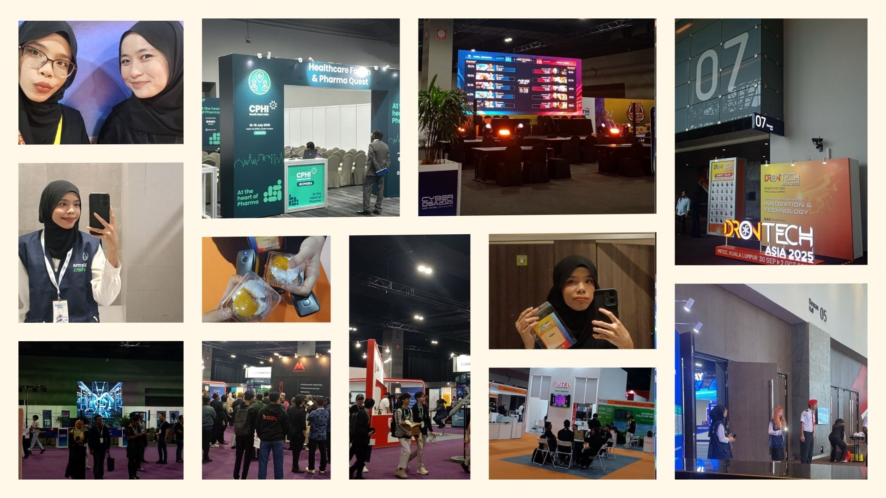
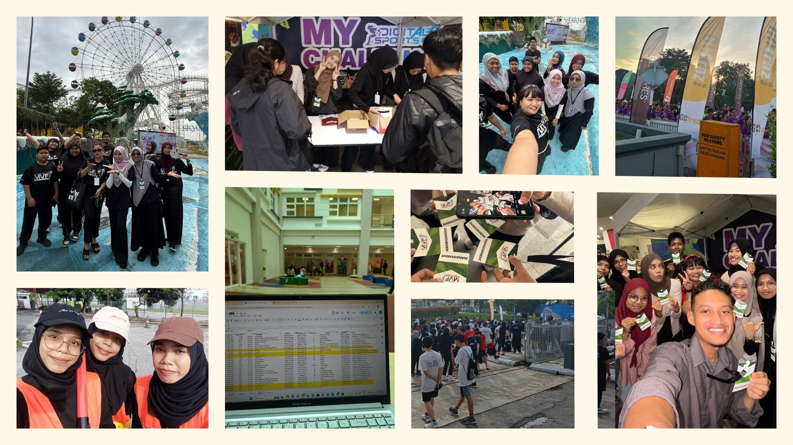
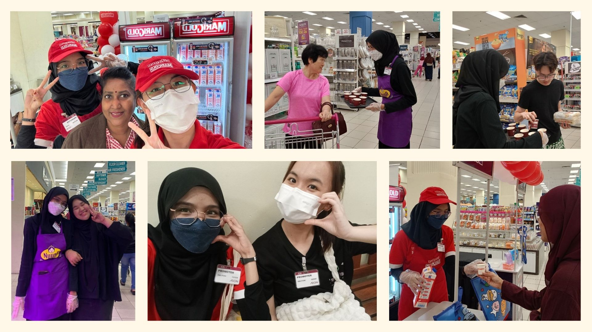

A glimpse into the experiences that shaped my growth, confidence, and teamwork

Joining WHX Event, CyberDSA, and DronTech was such a fun and eye-opening experience. It was my first time being part of large-scale events, and everything felt exciting from busy halls to impressive booths and new technologies.
At WHX Event, I helped with event support and interacted with visitors, which boosted my confidence and communication skills. CyberDSA felt energetic and fast-paced, teaching me how important teamwork and quick thinking are in a real working environment. Meanwhile, DronTech was especially interesting as I got to see innovative technologies up close while working together with my team to keep everything running smoothly.
Being part of the event crew for Malaysia Vibes Fest (Half Marathon) and BMW Charity Run was a fun, energetic, and unforgettable experience.
As a crew member, I assisted with runner registration, crowd coordination, and on-ground support to ensure the events ran smoothly.
Despite the long hours, the positive energy from runners and fellow crew members made everything worthwhile. These experiences strengthened my teamwork, responsibility, and time management skills.


Working as a promo crew for HL Milk and Nuuna Noodles was a fun and hands-on experience. From product sampling to interacting with customers, every shift was filled with smiles, conversations, and a bit of multitasking.
I learned how to approach customers confidently, explain products clearly, and handle different personalities in a friendly way. Communication and teamwork played a big role in making each promotion successful.